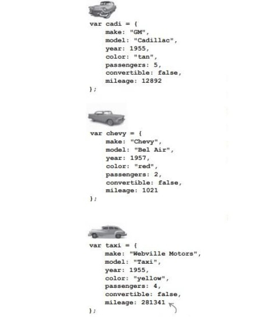

Головна > Тема 10
Передача об'єктів функціям
Виходить що при передачі по значенню в параметрі передається копія посилання (не копія об'єкта), яка теж вказує на об'єкт. Це означає що при зміні властивості об'єкта в функції змінюється властивість початкового об'єкта.
function loseWeight(dog, amount) {
dog.weight = dog.weight - amount;
}
alert(fido.name + " now weighs " + fido.weight);У генераторі фраз ми будували рядок за допомогою конкатенації, а тут створюємо новий об'єкт.
Поведінка об'єктів
Наприклад, собака гавкає, бігає, приносить палку і так далі
var fiat = {
make: "Fiat",
model: "500",
year: 1957,
color: "Medium Blue",
passengers: 2,
convertible: false,
mileage: 8800,
drive: function() {
alert("Zoom zoom!");
}
}Функція додається в об'єкт; її властивості можуть бути функціями.
Ім'я функції не вказуємо, воно співпадає з іменем властивості.
Коли викликаємо метод drive також використовуємо точковий запис, але з іменем об'єкта fiat і ім'ям властивості drive як у виклику будь-якої функції далі ідуть круглі дужки.
fiat.drive();Виклик метода drive об'єкта fiat.
Вдосконалення метода drive
Зазвичай машиною можна керувати коли ввімкнено двигун, змоделюємо цю поведінку:
- Додаємо булеву властивість для зберігання стану двигуна (Ввімкнений чи вимкнений)
- Два метода для ввімкнення і зупинки двигуна
- Перевірку в метод drive, яка встановлює (впевнюється) що двигун ввімкнено, перед тим як ми зможемо керувати машиною.
В методі drive змінна started не є локальною, глобальною і параметром. Вона є властивістю об'єкта fiat. JS не розуміє якого саме об'єкта. В JS існує ключове слово this, яке призначене для позначення поточного об'єкта з яким ми працюємо.
Треба додати "this." перед кожним зверненням до властивості started.
Метод - це функція присвоєна імені властивості в об'єкті. Функція викликається по іменам, а методи - крапковим записом.
Метод можна додати в об'єкт після того як він вже створений (за аналогією з додаванням властивості в об'єкт).
car.engageTurbo = function() { ... };Копіювання методів start, stop, і drive в кожний об'єкт призводить до дублювання коду. Вирішення проблеми розбирається пізніше.
Цикл for in
Цикл for in перебирає властивості об'єкта в довільному порядку.
for (var prop in chevy) {
console.log(prop + ": " + chevy[prop]);
}Може бути інша змінна.
Виходить в Javascript є інший спосіб звернення до властивостей:
Перший спосіб:
chevy.color;Другий спосіб:
chevy[color]; // схоже на звернення до елементів масиву
chevy["co" + "lor"];
Як поведінка впливає на стан
Об'єкти мають стан і поведінку.
Властивості об'єкта дозволяють зберігати дані поточного стану — рівень бензину, поточну температуру, тощо. Методи об'єкта можуть наділяти об'єкти поведінкою — запустити двигун, ввімкнути обігрів і так далі. Тобто стан і поведінка пов'язані. Не можна завести машину, якщо у баці немає бензину.
Додамо в автомобіль датчик бензину — властивість fuel, а заправку буде виконувати метод addFuel, де параметр amount використовується як приріст палива в властивості fuel.
var fiat = {
fuel: 0,
addFuel: function(amount) {
this.fuel = this.fuel + amount
}
}Якщо палива нема машина не поїде, тож треба додати перевірку рівня палива, а потім зменшувати fuel на 1 при кожному виклику drive.
Але ж на поточний момент ми можемо завести машину без палива. Спробуйте виправити це.
Javascript надає багато готових об'єктів:
- Date - Для роботи з датою і часом;
- Math - Генерація випадкових чисел і не тільки;
- RegExp - Дозволяє шукати текст в рядках по заданому шаблону;
- JSON - Дозволяє передавати об'єкти в інші додатки;
- Document - Для запису у веб-сторінку коду;
- Window - Надає властивості і методи що відносяться до браузера;
- Console - Метод log використовується де ведення повідомлень в консоль
Наступний крок — навчитися створювати об'єкти, які будуть схожими і будуть використовувати код, що знаходиться в одному місці.
Закріплення знань
Напишіть код для кожної машини:
